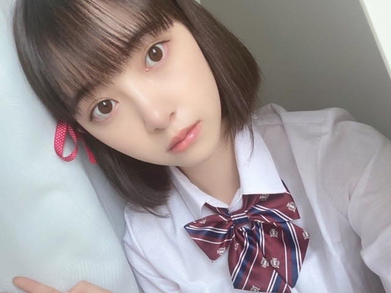
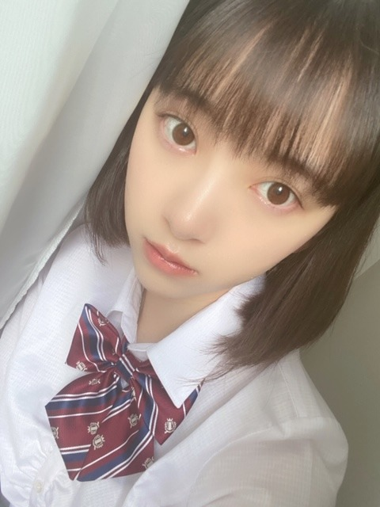
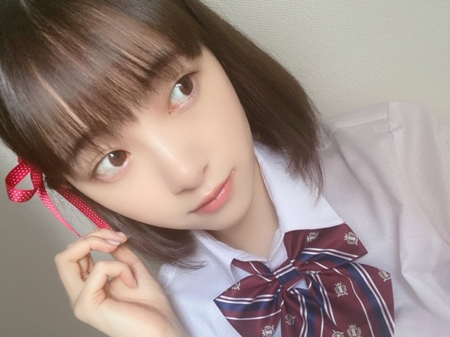

2020/0512Tue君の名は。
久しぶりに 君の名は。
を観たら改めていい作品だなって...
ぽろぽろ泣きました...
三葉たちの岐阜弁を聞くと
岐阜に帰りたくなります
ちなみに手に すきだ と
書かれているのを見て
これじゃ、名前わかんないよって言うシーンと
瀧くんが三葉になって
ぺらぺらと岐阜弁を話すシーンと
三葉が花火大会で髪を切ってくるシーンが
特にすきです
そして再現してほしいキャラクターに
宮水三葉ちゃんがあったので
挑戦してみました!
三葉との共通点は岐阜出身で
髪を衝動で切る癖があるところくらいです



髪短い三葉
髪が長い三葉
クオリティ低くてすみません...
新海誠監督の作品って
音楽との相性が抜群で心地いいですよね
特に
スパークル が流れる
タイミング、絶妙...
" 愛し方さえも 君の匂いがした
歩き方さえも その笑い声がした
いつか消えてなくなる 君のすべてを
この眼に焼き付けておくことは
もう権利なんかじゃない 義務だと思うんだ "
（ ｉ _ ｉ ）エモい......
好きなアニメや映画ドラマを見返す
いい機会なのでたくさん観たいと思います!
次は何を再現しようかな~
#未央奈の再現チャレンジ
☺︎
ではでは
2020/05/12 18:24


コメント(489)
実写版がでたら未央奈にやってほしいな!
他にもっと見てみたいな。
ジブリシリーズとか天気の子。
アニメやマンガだとワンピースのボアハンコックで見下し過ぎて見上げてるのとか。
僕たちは勉強ができないの古橋文乃のカチューシャ姿とか。
食戟のソーマの田所恵とか
もっとありすぎて選べない!?
ではまたコメントおじゃまします。
ブログ更新ありがとうございます。
堀三葉、かわいすぎま～す。こんな表情で見つめられたら‥‥。
でも、これが似合うのが、未央奈の魅力なんですよね。
昨年の「ホットギミック」見た時、すっぴんで演じた高校生・初に全く違和感を感じませんでしたが、やっぱり未央奈は何年たっても「永遠の高校生」なんですよ。与田ちゃんの２０歳が信じられないみたいに‥‥。
最近の大人の未央奈も確かに魅力なんですが、今日のブログの写真を見て、やっぱり思いました。「未央奈は可愛いのが一番」と。
もちろん、私も「君の名は」は見ましたし、その一つ一つが今も鮮明に焼き付いていますよ。
わかる。スパークルの流れるタイミングはやばい！制服似合ってる！
「君の名は」僕も好きです!
未央奈ちゃんの写真集が発売される日に、「天気の子」のDVDも発売されるので、どちらもとても楽しみです!
#未央奈の再現チャレンジ
#天気の子の陽菜ちゃん
あのシーンほんとすき！
いいよねー
こっちも観たいなぁ。そして泣く！
ぎふ。
岐阜弁かわい〜
岐阜いこっかな〜♪
いいシーン！さすが！
他にこっちは序盤の彗星が流れるところかな〜
そのときはきれいだなぁ。って感動するのにまさかの後半に衝撃を受けるギャップ！すごい作品♪
三葉ちゃんきたぁ〜！！！
髪を衝動で切る癖。笑
かわいっ！
表情もいいね！きょとんとしてるみたいな感じだけど、もしかして入れ替わってる？笑
こっちは今日もこうしてみおちゃんがみれて幸せよ〜(｡-_-｡)
曲との協調性素敵すぎるよ〜
あー、わかる。
今聴いてるとこ。エモい！☺︎
" まだこの世界は 僕を飼いならしてたいみたいだ 望み通りいいだろう 美しくもがくよ "
↑こっちはこれかなー！ 悲しい夜に聴くとなんか自分に酔いながらまたがんばりますかぁ。ってなる。
ふぅ〜⤴︎ 楽しみ〜
では！わくわくさん✨
すきだ
私も君の名は。好き！
天気の子も好きです！
君の名は観れてないから観ないとね♪
中々観ようと思っても観れてないなあ(>_<)
再現写真もありがとう(〃^ー^〃)
可愛い
明日もHAPPYを
お休みなさい(^-^ゞ
三葉ちゃんのコスプレ可愛い過ぎる❤
アニメ顔負けの可愛さだね❤
ポニョのコスプレして欲しい笑
わかりませんが(^-^;
めっちゃ可愛いと言うのが素直な感想(*^^*)
三葉の格好とてもお似合いですね。なんだか表情も無防備で普段より幼く見えててすごいです。可愛くてありがとうございます。
歌詞読み込んでから挙げてくれたシーンに注目しつつ僕も見ますね。次の再現も楽しみにしてます。
あと写真集の裏表紙みましたよ。どれも綺麗で、身体のどのラインも美しくて見惚れました。
丸デブ総本店いきたなってきた！
未央奈さんはクオリティ高いキャラクターの再現をするから、正直に言うと…めっちゃ憧れるんですよね！
あっ、そうだ。
未央奈さんにオススメの曲を教えます！(急になんだよ。)
自分がハマってる聴いてる曲は、宇多田ヒカルさんの「Time」っていう曲です。この曲は美食探偵っていうドラマの主題歌で、めっちゃ感動できる曲なんです！是非聴いてみてください！！！
じゃまたブログ更新した時に！ﾊﾞｲﾊﾞｲ(ヾ(´・ω・｀)
昨日のドリームバイト観ました。
可愛かったです。
服もお気に入りの色でしたね。
昨日観てるなかでも感じたんですが
最近はより可愛くなったと思う事が
増えたんですがなんなんだろうね。
お世辞を言ってるつもりもないし
本人に聞くのも野暮な話ですよね。
分かってるんだけどなぁ。
メイクで印象が変わってるのか…
でも、柔らかい表情とか増えた気が
してるんですけどね。
このままではただ可愛いと言うだけで
終わってしまいそうですね。
昨日も暑かったですが今日も暑く
なりそうだなぁ。あっという間に
気分のいいシーズンが駆け抜けて
いきそうだね。
コロナもそうですけど、熱中症にも
気を付けてくださいね。体が慣れて
いない時の方が危険だから。
では。
制服まだまだ活けますなぁ。エモイッす。
今日も良い天気だす。
お散歩には持ってこいッス。
では。
君の名は、懐かしいなぁ。
予想の上をいく展開で面白かった！
映画ってやっぱりいいね！
そして、今回のブログの写真。
可愛いすぎだ！！
めっちゃ似合ってます！
クオリティ低くないよ！
改めて言います。
可愛い！！
これで今日も１日頑張れそうです。
ではでは～
自分も君の名は好きでよく観ます笑
再現クオリティー高いと思いますよ それとめちゃくちゃかわいい
天気の子の陽菜さんして欲しいです
ではでは
三葉の再現可愛いから思わず声出しちゃいました
メイクとかこういった再現とか色々チャレンジしてくれるのが本当に楽しみで、いつも似合ってるからこれからもお願いします！
ではまた次のブログで
可愛すぎる
あと肌白くて羨ましいな...
#未央奈の再現チャレンジ
もののけ姫のサンやってほしいな〜！！
ちょっとかっこいい感じの未央奈ちゃんがみたいです！
いつもありがとう
相変わらず可愛い未央奈ほんと好きすぎる。。
今回の写真はいつもにもまして可愛い。
毎日ブログありがとね。いつも癒されてます。
俺のリクエストは、部屋の中ではなかなか再現できないものばかりで。
君の名はを観てると、自分の悩みがちっぽけに感じるよ
秒5セについては、大人になった明里は何を思ってるんだろうって思う。(かじかんだ手で本を読んでるシーン)
こうやって、同じものに共感できて、語れるってすごい素敵なことだよね
P.S 公衆電話……時刻表、ラジカセとかなくなっちゃいけないものがたくさんある気がする
リズの青い鳥とかパプリカとかも映像美もストーリーテリングも素晴らしいアニメ映画でオススメ。今夜は、ギャラクシークエスト観てから寝よう・・・。今週末も体調に気をつけて過ごしましょう！
応援しているよ☺️☺️
また再現チャレンジしていただけるのでしたら、
「聲の形」の 西宮硝子ちゃんをやってほしいです。
今の制服未央奈の中学生バージョンみれたからよかったけどねw
次はJK、高校生バージョンを披露だ！
なんてねw
三葉を超えちゃってますよ、可愛いすぎます。
「君の名は」、情景がすごくよくて、音楽が映画を造る部分もありますよね。
未央奈の再現チャレンジ、とても楽しみです！
気が赴くまま、感じたままにやってください。
ブログ更新、ありがとうございます。
可愛い笑これは実写もししたら主演堀未央奈だね！！間違いなし
ってくらいサイコォォォォォォァァァァァァ
ドリームバイト、僕は見たよ。録画して見ました。リモート出演で、私服での登場でしたね。みおなちゃん、私服似合っていて、めっちゃ綺麗で、めっちゃかわいかったです。
新しいドリーマーさんの１人、ラーメン職人を目指す花穂ちゃんが登場しましたね。花穂ちゃん、高校を中退しておばあちゃんのラーメン屋を継ぐ決意、すごかったですね。
次回も新しいドリーマーさんが登場しますね。楽しみですね。
みおなちゃん、体調に気をつけてね。
またコメントするね。
君の名は。名作ですよね♪
岐阜が舞台で誇らしいですよねー！
星空も綺麗で広大さも印象的です☆
三葉ちゃん上手く再現されてます！
衝動的な所もまた魅力なのですよ✨
この作品の絵も凄く綺麗ですよね！
観てると綺麗な気持ちになります✌
共鳴する気持ちも美しいのです♡☺
新海監督の作品いいよね。映画もいいけど本もよくて、秒速5センチメートル、言の葉の庭、天気の子は小説版読んだよ(^^)
未央奈の再現もかわいくてよきよき。
ドリームバイトも見たよ。私服もかわいくてよきよき(*^^*)
次回の再現も楽しみに待ってます。
いつもありがとう。また更新楽しみにしてます！
これは楽天さんにもまたお世話になるパターンかなーw
楽天版も買いま、、、、ｽ w
(゜゜)(。。)(゜゜)(。。)
（自分が好きなシーンは二人が「カタワレ時」ってハモるところです）
今朝はギターで弾き語りも披露されてました。
未央奈ちゃんは朝ドラ観てますか？
松井玲奈ちゃんも出演されてますので、良かったら観てみてくださいね♪☆
リアル三葉で、やっぱ未央奈はスーパーエモエモマックスだよ
「スパークル」が流れるタイミング、確かに絶妙だよね
「スパークル」が流れてくる事で、うるっときたり、鳥肌が立ったり、気分が高まったりして、一気に雰囲気が変わる
「君の名は。」いい作品だなぁ
またねっ！
コメントする